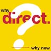
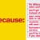
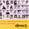
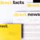

Marketing a Federal Loan Program
Background
The Department of Education created the Federal Direct Student Loan Program to streamline the whole lending process and to provide more options for repayment, thereby reducing burgeoning default rates. The thinking was that loans that offered more flexible payment terms based upon individual circumstances and that were simpler to apply for, process, and repay would be a boon to school and student alike. The program was approved by Congress, provided that it attract 5% of the overall student loan traffic in its first year of operation (which had been done), and 40% in its second.
The latter was not so easy, as these FDSL government loans were stealing business from both the commercial banks and FannieMae, each of whom was now energetically fighting back. Plus, those schools that were the most enthusiastic about the program had already signed on or had indicated their willingness to do so, and demand was not as high as hoped.
Strategy
When we came aboard, we first set out to understand the barriers that were keeping school administrators from joining the program. We set criteria for key schools (reputation, # of students, opinion-makers, etc.), and then selected and conducted interviews with their primary decision-makers. Most believed the program had merits, but were either not convinced that a government program could operate as efficiently as a commercial bank or simply didn't want to make a change.
To convince them otherwise, communications were created with a look, feel, and tone more reflective of the program -- non-bureaucratic, direct, quick and easy.
As we weren't allowed to change the program's unwieldy name, we focused upon the word "Direct." "School bus" yellow became the primary color in lieu of governmental red, white, and blue. Direct response, advertising, and direct mail used quick-read visuals and straight copy to emphasize the ease of giving or getting a Direct loan -- all to further the new "Direct" personality.
Results
School applications for the program exceeded the 40% limit.